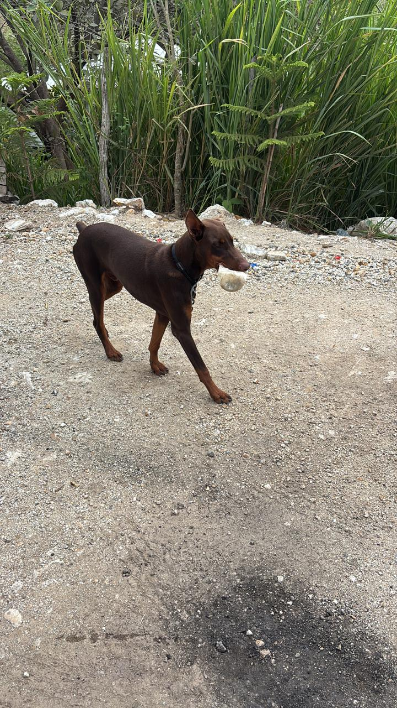

Información general: Enzo es un perro de raza Doberman. Los Doberman son perros de tamaño mediano a grande, muy elegantes, atléticos, inteligentes y leales. Son reconocidos por su gran instinto de protección y energía.